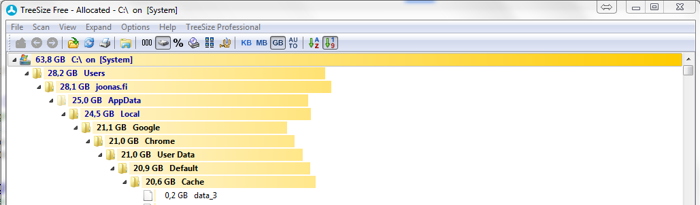
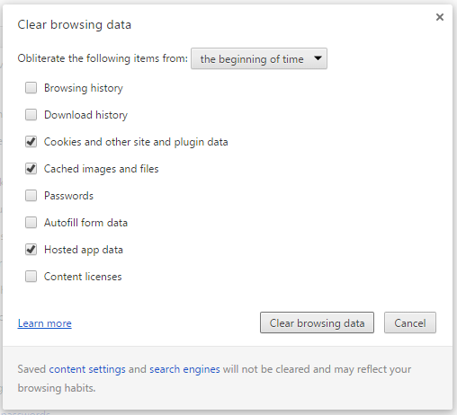

Chrome: huge cache usage
I had this issue where Chrome browser was using 20 GB of cache, effectively suffocating my SSD’s 60 GB system partition.
I pinpointed the problem with TreeSize free (highly recommend!).

There were 32 000+ files:
Clearing browser history didn’t do nothing to the cache folder:

What worked was closing Chrome, deleting the whole folder (make sure not to use the recycle bin) and starting it up again.
After a couple of days, the folder was at ~900 files with 300 MB, and clearing the cache now reduces it to 14 files with 6 MB - a level to be expected.
I don’t know what the problem was - posting here in hopes that this helps other people struggling with this (though I didn’t find any exact same experiences by Googling..).

Thanks for reading! 😍
If you like my writing, consider following me on Twitter.
Stay updated on my blog posts & projects - sign up for
my newsletter. 🚀
No spam, unsubscribe any time.
RSS also available.